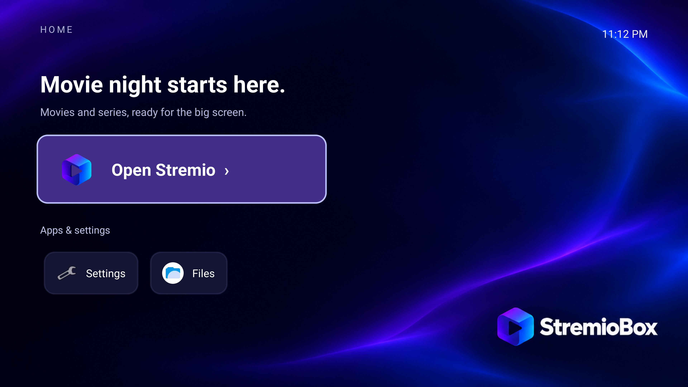

HDR10 hardware decoding
4K HEVC Main10 uses Intel hardware decoding and 10-bit output. HDR mode, picture and sound were confirmed on the LG test TV at around 24 fps.
Playback test resultsA bootable Android 16 system with Stremio TV, a Home screen for your remote and fixes for Intel video, HDMI audio and Bluetooth. Tested on the Intel NUC10i5FNH.

INCLUDED FIXES
The image packages the changes used on our test NUC. Playback keeps Stremio's existing mpv interface, including the seek bar and player controls.
4K HEVC Main10 uses Intel hardware decoding and 10-bit output. HDR mode, picture and sound were confirmed on the LG test TV at around 24 fps.
Playback test resultsOrdinary Homatics B21 keys work after reboot without repeating the pairing combination. Display standby keeps Android running to preserve recovery.
Remote and standby limitsExternal SRT subtitles follow Disabled and language selection, including audio-track changes. Eight development regression cases checked that behavior.
What changed in the player
RELEASE HISTORY
The current image adds English Home to the initial public platform. The changelog records each fix, its test evidence and the remaining limits.
CURRENT · 5 OCTOBER 2026 UTC
Home 1.1 translates the launcher labels and messages. New installations include it; existing installations can apply the signed Home APK. The update was checked after reboot.
Changes and update instructionsFIRST PUBLIC IMAGE · 5 OCTOBER 2026 UTC
Android 16 with Intel HDR10 playback, HDMI audio, Homatics reconnection, display-standby and subtitle fixes. Added Home, boot artwork and installation of the original signed Stremio app.
Detailed platform changelogCHECK BEFORE INSTALLING
One physical configuration has been verified. Other PCs and remotes need their own tests; similar specifications do not establish compatibility.
Full compatibility matrix4K HEVC Main10 at ~24 fps, HDR10, audible HDMI sound and display-standby recovery were checked. Long-duration soak and a separate physical power-button retest are still pending.
Other hardware, Dolby Vision, HLG, AV1, VLC/ExoPlayer, 4K60, true S3 sleep and HDMI-CEC are not verified.
CURRENT DOWNLOAD
Includes Home 1.1 and the initial image's playback, audio and Bluetooth fixes. Extract the native download ZIP. On Windows, double-click Download-StremioBox.cmd; Linux/macOS use the shell helper. No Python required. Then follow the USB boot guide.
git clone https://github.com/zubSero/StremioBox.git
cd StremioBox
powershell.exe -NoProfile -ExecutionPolicy Bypass -File tools/download.ps1 -OutputDirectory downloadsISO: 2.87 GB; allow 6 GB free during assembly. Try live USB boot first: the disk installer is not yet validated. Back up before installing. Userdebug preview: permissive SELinux and authenticated network ADB. Security and update scope.
INSTALLATION QUESTIONS
No. StremioBox is an independent community project built around Stremio and an Android TV base. It is not endorsed by Stremio or LineageOS. Their software and trademarks retain their original terms.
Home is our own launcher. Playback retains Stremio's usual mpv interface and controls, with a compatibility-checked native bridge and HDR/subtitle helpers. VLC and ExoPlayer have not been independently validated.
Reboots retain the packaged fixes. The tested same-version Stremio reinstall retained the integration, but a future app layout needs review. Replacing the OS requires an image containing these ports. There is no managed OTA channel yet.
Install the signed English Home 1.1 APK using the ADB update guide. This route needs neither USB installation media nor Python. It changes the launcher and survives reboot. Android and Stremio have their own language settings.
Root-ADB deployment is technically possible on a compatible existing Android installation, but the portable public system installer is still pending. Internal-disk installation from Linux and network boot also need validation. The USB-free options guide explains the requirements and current status.
The repository includes 17 platform patches, product configuration, Home source and artwork. The English image was produced by updating Home in the verified initial image. A clean full Android build from this public repository is still pending. Start with the build guide.
HARDWARE REPORTS
Share the computer model, GPU, Bluetooth adapter, remote and steps you tested. Include whether video, sound and remote control return after reboot and standby.